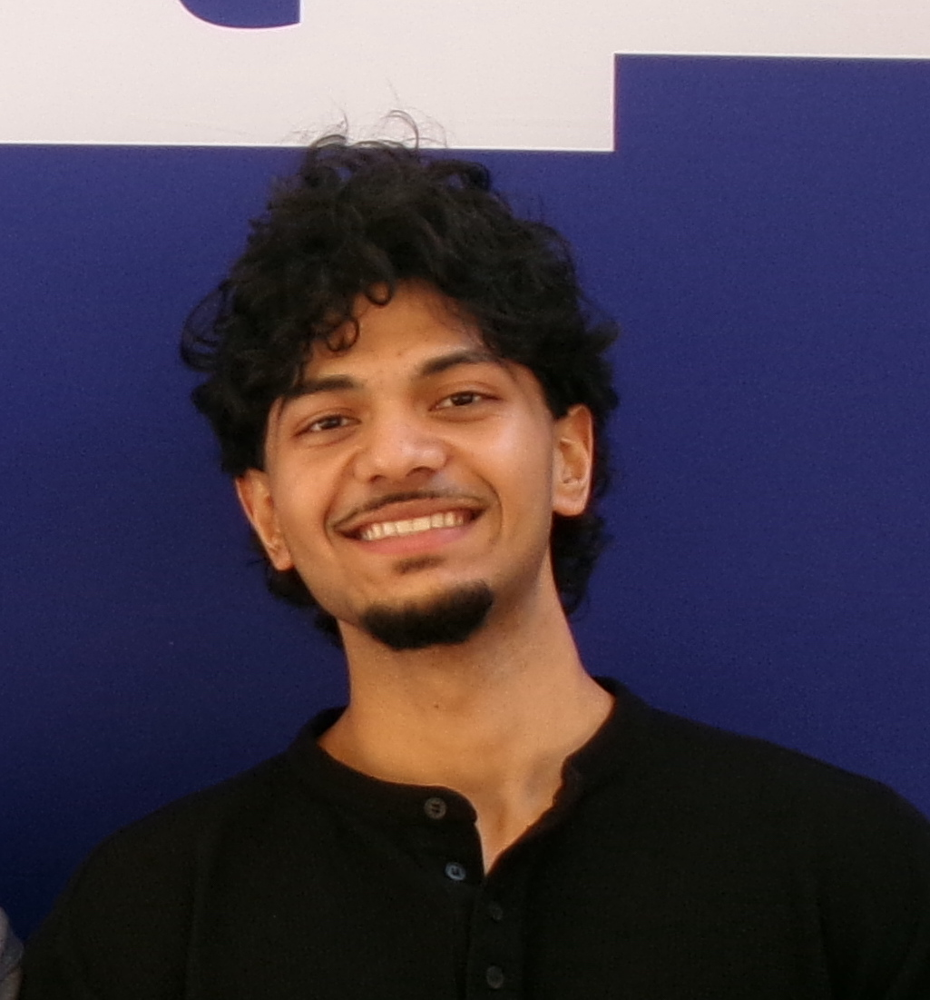
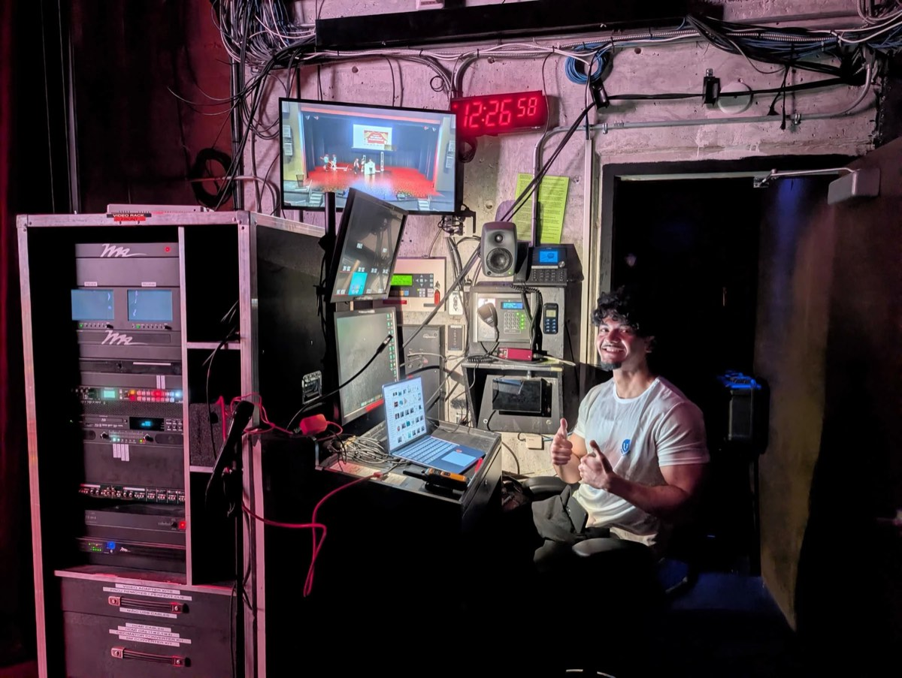

Mohammed Umair Jibran
Computer Engineering · York University
Design, build and understand how systems work

U+ Education
Helped lead an 11-member technical team
Turned requests into tasks and tested releases

Learning through practical work
Requirements and technical review
Release testing and team coordination
CAN-FD test bench
Two STM32 controllers
Python tests for missing and delayed messages
Embedded systems engineering
Design and validate hardware–software systems
Grow into leading embedded product projects